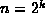
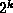
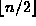

Data Structures and Algorithms
with Object-Oriented Design Patterns in Java
Data Structures and Algorithms
with Object-Oriented Design Patterns in Java
In this section we consider the running time
to raise a number to a given integer power.
That is, given a value x and non-negative integer n,
we wish to compute the  .
A naıve way to calculate
.
A naıve way to calculate  would be to use a loop such as
would be to use a loop such as
int result = 1;
for (int i = 0; i <= n; ++i)
result *= x;
While this may be fine for small values of n,
for large values of n the running time may become prohibitive.
As an alternative, consider the following recursive definition
For example, using Equation  ,
we would determine as follows
,
we would determine as follows
which requires a total of five multiplication operations. Similarly, we would compute as follows
which requires a total of eight multiplication operations.
A recursive algorithm to compute  based on the direct implementation of Equation
is given in Program .
Table gives the running time,
as predicted by the simplified model,
for each of the executable statements in Program .
based on the direct implementation of Equation
is given in Program .
Table gives the running time,
as predicted by the simplified model,
for each of the executable statements in Program .
| time | |||
|
statement | n=0 | n>0 | n>0 |
| n is even | n is odd | ||
| 5 | 3 | 3 | 3 |
| 6 | 2 | -- | -- |
| 7 | -- | 5 | 5 |
| 8 | -- | -- | |
| 10 | -- | -- | |
| TOTAL | 5 | ||
By summing the columns in Table we get
the following recurrence for the running time of Program
As the first attempt at solving this recurrence, let us suppose that  for some k>0. Clearly, since n is a power of two, it is even. Therefore, .
For , Equation gives
This can be solved by repeated substitution:
The substitution stops when k=j. Thus,
Note that if , then .
In this case, running time of Program
is .
The preceding result is, in fact, the best case--in all but the last two recursive calls of the method, n was even. Interestingly enough, there is a corresponding worst-case scenario. Suppose for some value of k>0. Clearly n is odd, since it is one less than  which is a power of two and even. Now consider :
Hence, is also odd!
For example, suppose n is 31 ( ).
To compute , Program calls itself
recursively to compute , , , , and finally, --all but the last of which are odd powers of x.
For , Equation gives
Solving this recurrence by repeated substitution we get
The substitution stops when k=j. Thus,
Note that if , then .
In this case, running time of Program
is .
Consider now what happens for an arbitrary value of n.
Table shows the recursive calls made by
Program in computing  for various values of n.
for various values of n.
| n | powers computed recursively | |
| 1 | 1 | |
| 2 | 2 | |
| 3 | 2 | |
| 4 | 3 | |
| 5 | 3 | |
| 6 | 3 | |
| 7 | 3 | |
| 8 | 4 |
By inspection we determine that the number of recursive calls made
in which the second argument is non-zero is .
Furthermore, depending on whether the argument is odd or even,
each of these calls contributes either 18 or 20 cycles.
The pattern emerging in Table suggests that,
on average just as many of the recursive calls result in an even
number as result in an odd one.
The final call (zero argument) adds another 5 cycles.
So, on average, we can expect the running time of Program
to be
 Copyright © 1998 by Bruno R. Preiss, P.Eng. All rights reserved.
Copyright © 1998 by Bruno R. Preiss, P.Eng. All rights reserved.